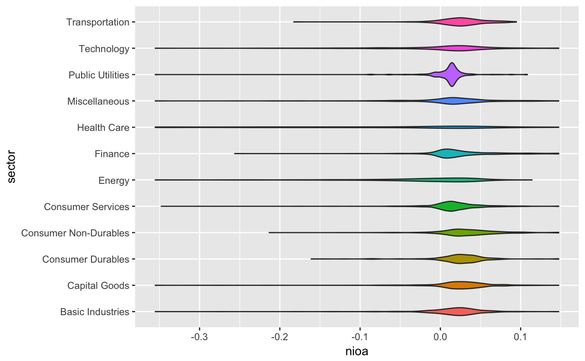

prepare_by_group_violin_graph.RdReads a data frame containing a grouping factor and a numerical variable and plots a series of violin graphs by the grouping factor.
prepare_by_group_violin_graph(df, by_var, var, order_by_mean = FALSE, group_on_y = TRUE, ...)
| df | Data frame containing the grouping factor and the numerical variable to be plotted |
|---|---|
| by_var | a string containing the column name of the grouping factor |
| var | a string containing the column name of the numerical variable |
| order_by_mean | a logical value indicating whether you want your violins to be ordered by group means (defaults to FALSE) |
| group_on_y | a logical value indicating whether you want your violins to be oriented horizontally (defaults to TRUE) |
| ... | additional parameters that are passed to
|
The plot as returned by ggplot2
data(russell_3000) df <- treat_outliers(russell_3000) prepare_by_group_violin_graph(df, "sector", "nioa")